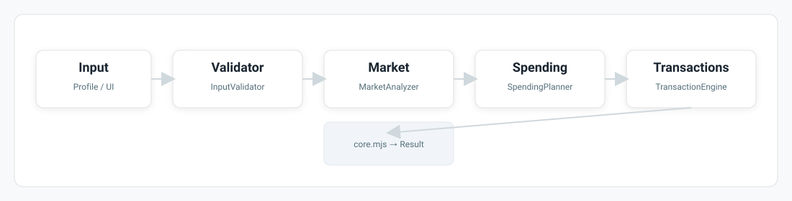
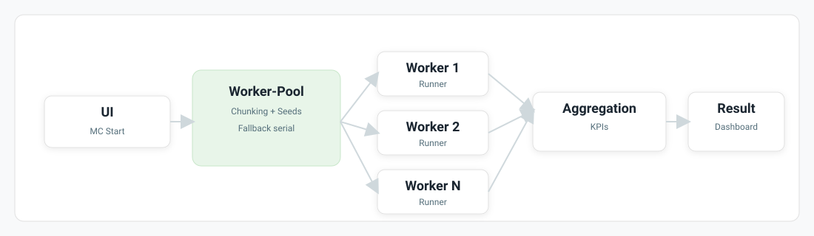
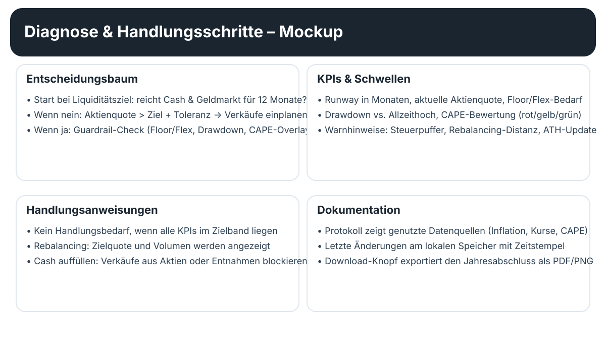
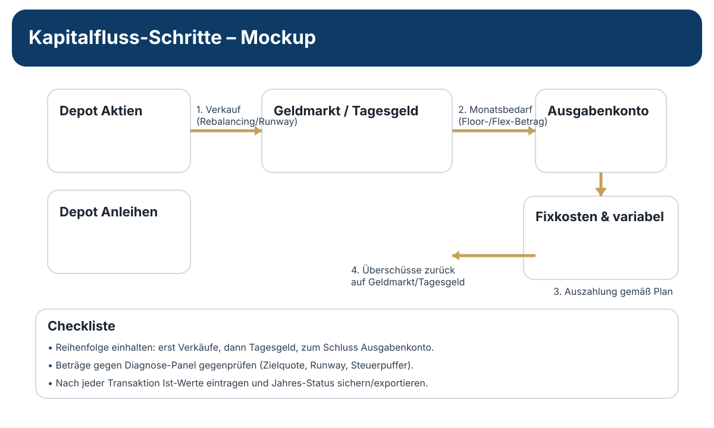
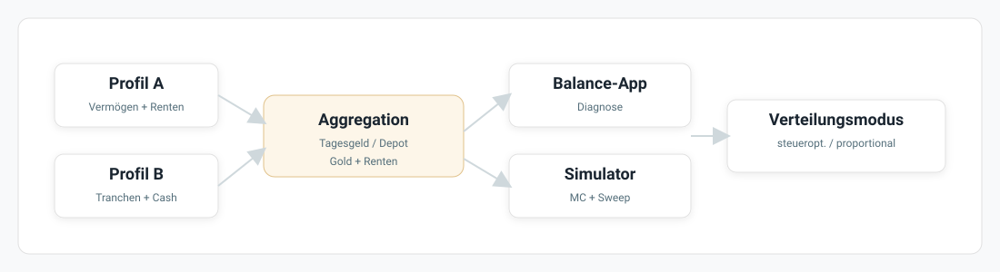

Benutzerhandbuch
Anleitungen und Hilfestellungen für Ihre Finanzplanung
Inhaltsverzeichnis
⚡ Start in 2 Minuten
Kurzfassung analog zum QUICKSTART.md.
-
1
Startart wählen
Option A:
RuhestandSuite.exestarten. Option B: Repository entpacken undstart_suite.cmdausführen. -
2
Profile vorbereiten
In
index.htmlProfil(e) anlegen und Stammdaten pflegen. Für Paare je Partner ein eigenes Profil verwenden. -
3
Tranchen erfassen
Im gewählten Profil Depot-Tranchen im Profil-Assets-Manager pflegen und die sichtbare Profil-ID prüfen. Diese Daten sind die Basis für Teilfreistellung und steueroptimierte Verkäufe. Empfehlungen verändern den Realbestand nicht.
QUICKSTART.md und
aufgabenorientierte Abläufe in docs/guides/GUIDED_TOURS.md.
📊 Simulator Schnellstart
In 3 einfachen Schritten zu Ihrer Ruhestandsprognose.
-
1
Rahmendaten prüfen
Profil(e) auswählen, Floor/Flex-Bedarf setzen, optional einen Mindest-Flex p.a. festlegen und Personen/Renten in der Sektion "Personen & Rente" kontrollieren.
-
2
Parameter anpassen (Optional)
Wählen Sie Ihre Asset-Allokation (Aktienquote) und bestimmen Sie, wie viel Rente Sie bereits sicher haben (z.B. gesetzliche Rente). Standardwerte sind bereits für Sie vorausgefüllt.
-
3
Simulieren und Analysieren
Klicken Sie auf "Simulation starten". Das System berechnet tausende mögliche Marktszenarien. Achten Sie auf die Erfolgswahrscheinlichkeit – diese sollte idealerweise über 95% liegen. Prüfen Sie zusätzlich den Backtesting-Tab.
index.html, damit Steuerlogik und Aggregation korrekt arbeiten. Nutzen Sie danach
den Parameter-Sweep, um schnell zu sehen, wie sich eine höhere Sparrate oder ein späterer
Renteneintritt auf Ihre Erfolgchancen auswirkt.
⚖️ Balance App Schnellstart
Das jährliche Ritual für Ihr Portfolio (Prime Harvesting).
-
1
Jahres-Update starten
Klicken Sie oben auf den Button "🌐 Jahres-Update". Die App ruft automatisch die aktuelle Inflation (EZB/World Bank/OECD) und ETF-Kurse ab, aktualisiert Ihr Alter und rückt die Marktdaten (Shiller-CAPE Basis) um ein Jahr weiter.
-
2
Aktuelle Werte prüfen
Kontrollieren Sie die aktualisierten Felder. Tragen Sie den heutigen Marktwert Ihrer Depots und Cash-Konten ein. Die neuen Bedarfswerte (Floor/Flex) wurden bereits automatisch um die Inflation erhöht.
-
3
Diagnose & Handlung
Schauen Sie auf das Panel "Ergebnisse & Handlungsschritte". Folgen Sie genau der Anweisung (z.B. "Kein Handlungsbedarf" oder "Rebalancing durchführen").
-
4
Ausgaben-Check
Im Tab "Ausgaben-Check" pro Monat CSV importieren, Monatsampel prüfen und Soll/Ist auf Basis importierter Monate bewerten.
-
5
Kapitalfluss umsetzen
Führen Sie die angezeigten Transaktionen bei Ihrer Bank durch (z.B. Verkauf von XX € um Cash aufzufüllen).
Alt+J Jahresabschluss, Alt+N Marktdaten,
Alt+I Import, Alt+E Export.
Überblick
Die Ruhestand-Apps Suite bündelt zwei Kernwerkzeuge: den Simulator für langfristige Prognosen und die Balance-App für laufende Entscheidungen in der Entnahmephase. Das Handbuch ist nach den typischen Schritten gegliedert und bietet schnelle Sprungmarken über das Inhaltsverzeichnis.

Junger Ansparer: Nutzung der Suite
Wenn der Ruhestand noch weit entfernt ist, hilft Ihnen die Suite dabei, den langfristigen Spar- und Investitionsplan robust aufzusetzen und regelmäßig zu kalibrieren. Konzentrieren Sie sich im Simulator auf die Wachstumsphase, nutzen Sie Parameter-Sweeps für Szenarien und bauen Sie Routinen auf, um Ihre Fortschritte jährlich zu messen.
Empfohlener Ablauf
- Horizont & Sparrate festlegen: Tragen Sie aktuelles Vermögen, geplante Monatsrate und Ziel-Rentenalter ein. Prüfen Sie, ob der monatliche Überschuss realistisch zur Gesamtplanung passt.
- Asset-Allokation wählen: Starten Sie mit einer Aktienquote passend zu Ihrem Risikoappetit (z.B. 70-90 % bei langem Horizont). Nutzen Sie die Sensitivität der Erfolgswahrscheinlichkeit, um die Quote anzupassen.
- Parameter-Sweep ausführen: Variieren Sie Sparrate, Rentenalter und Aktienquote automatisch, um zu sehen, wie viel Puffer Sie für Marktstress haben.
- Zielkorridor definieren: Speichern Sie zwei bis drei Szenarien (Basis, optimistisch, konservativ) und vergleichen Sie Erfolgswahrscheinlichkeiten sowie Endvermögen.
- Jährliches Update: Wiederholen Sie die Simulation nach Gehaltsänderungen oder größeren Ausgaben. Dokumentieren Sie die Version (z.B. YYYY-MM) für Ihre Planungsunterlagen.
Nutzen für Ansparer
- Klarheit über Sparlücke: Zeigt, ob Sparrate oder Rentenalter angepasst werden sollten, um eine hohe Erfolgswahrscheinlichkeit zu erreichen.
- Stress-Resilienz: Monte-Carlo-Simulationen machen sichtbar, wie robust der Plan gegenüber Crashs oder hoher Inflation bleibt.
- Messbare Fortschritte: Durch jährliche Szenarienvergleiche erkennen Sie, ob Sie im Soll liegen oder nachjustieren müssen.
- Frühe Warnsignale: Sinkt die Erfolgswahrscheinlichkeit unter Ihren Zielkorridor, können Sie Sparraten erhöhen oder Konsumziele anpassen, solange noch viel Zeit bleibt.
Ansparphase: Ablauf und Pflege
Diese Schritte helfen, die Ansparphase planbar und belastbar aufzusetzen. Fokus: Simulator nutzen, Annahmen sauber halten, Abweichungen früh erkennen.
1) Startwerte und Einzahlungen
- Startvermögen: Aktuellen Depotwert inkl. Cash erfassen.
- Sparrate: Monatliche Einzahlungen angeben; optional Sparsteigerung p.a. eintragen.
- Sonderzahlungen: Bonus, Erbe oder Einmalzahlungen als Extra-Sparjahr simulieren.
2) Simulator als Hauptwerkzeug
- Parameter-Sweep: Sparrate/Rentenbeginn variieren, um Zielkorridore zu finden.
- Risiko-Sensitivität: Aktienquote und Fees anpassen, um robuste Korridore zu testen.
- Interpretation: Nicht nur Median, sondern 10./90. Perzentil betrachten.
3) Jahrespflege in der Ansparphase
- Update-Rhythmus: Einmal pro Jahr Werte aktualisieren (Vermögen, Sparrate, Ziele).
- Ist vs. Plan: Abweichungen dokumentieren und Szenario neu rechnen.
- Rebalancing: Wenn nötig manuell; Balance-App ist erst in der Entnahmephase relevant.
4) Übergang zur Entnahmephase
- Timing: 3-5 Jahre vor Ruhestand erste Balance-Tests durchführen.
- Liquidität: Cash-Buffer aufbauen, um erste Entnahmejahre zu stabilisieren.
- Tranchen: Depot-Tranchen-Manager pflegen, damit Steuerlogik realistisch wird.
5) ETF-Auswahl und Diversifikation
- Breit diversifiziert: Welt-ETF als Kern; Sektor- oder Themen-ETFs nur als Satelliten.
- Währung: Keine starre Währungswette; Diversifikation über Regionen bevorzugen.
- Kosten: TER und Spreads vergleichen; kleine Kostenunterschiede wirken langfristig stark.
6) Rebalancing-Regeln
- Rhythmus: Jährlich prüfen; bei starken Abweichungen kürzer reagieren.
- Bandbreiten: Zielquote plus/minus 5-10 Prozentpunkte als Trigger.
- Umsetzung: Rebalancing in der Ansparphase meist durch Sparraten steuern.
7) Sparplan-Steigerungen
- Automatik: Sparrate jährlich anpassen (z.B. +2-3% oder Inflationsrate).
- Meilensteine: Gehaltsstufen und Einmalzahlungen als Sonderbeitrag abbilden.
- Realismus: Sparrate nicht nur am Optimum, sondern am realen Cashflow ausrichten.
Beispiel-Strategien (Ansparphase)
- Konservativ: 40-60% Aktien, Rest sichere Bausteine; geringere Schwankung.
- Ausgewogen: 60-75% Aktien, Rest stabilisierend; guter Kompromiss.
- Offensiv: 80-100% Aktien; hohe Schwankungen, lange Anlagehorizonte vorausgesetzt.
Beispielwerte (Orientierung)
- Cash-Puffer: 3-6 Monatsausgaben als Reserve neben dem Depot.
- Sparrate: 10-20% des Nettoeinkommens als Zielkorridor.
- Sparsteigerung: 2-3% pro Jahr oder Inflationsrate als Automatismus.
Hinweis: Diese Werte sind nur Orientierung und ersetzen keine individuelle Planung.
Installation & Start
Zum Start genügt ein moderner Browser (Chrome, Edge oder Firefox). Laden Sie das Repository lokal
und öffnen Sie index.html. Alternativ nutzen Sie den Windows-Starter
start_suite.cmd (oder start_suite.ps1), um die Suite als lokalen Webserver
inklusive Yahoo-Proxy für Online-Kurse zu starten. Für einen komplett browserfreien Aufruf steht die
portable RuhestandSuite.exe bereit; sie benötigt keine zusätzlichen Abhängigkeiten und
lässt sich direkt per Doppelklick starten. Legen Sie die EXE in einen beliebigen Ordner und kopieren
Sie sie bei Bedarf zusammen mit dem Konfigurationsordner als Backup.
Praktische Hinweise
- Sichern Sie Lese- und Schreibrechte, damit lokale Daten (z.B. Szenarien) gespeichert werden können.
- Für Live-Daten (Inflation, Kurse) ist eine Internetverbindung notwendig; die Simulation funktioniert auch offline.
- Online-ETF-Kurse benötigen in der Browser-Variante Node.js, da der lokale Yahoo-Proxy über
start_suite.cmdgestartet wird; die Tauri-EXE bringt diesen Proxy selbst mit. Ohne Node.js läuft die Browser-Suite weiter, nur der Kurs-Download ist dort deaktiviert. - Beenden Sie die lokalen Dienste mit
stop_suite.cmd, wenn der Browser geschlossen wird.
Simulator
Simulieren Sie Ansparphase, Ruhestandseintritt und Entnahmeverhalten in wenigen Schritten.

Eingaben
Tragen Sie Vermögen, monatliche Sparrate sowie gewünschtes Renteneintrittsalter ein. Fügen Sie Ihre erwarteten Ausgaben im Ruhestand (Grundbedarf und variable Kosten) hinzu.
- Zeithorizont: Die App simuliert standardmäßig bis zum 100. Lebensjahr; passen Sie das Zielalter an, falls längere Sicherheitsmargen gewünscht sind.
- Inflationsindex: Geben Sie heutige Euro-Beträge an, die Engine indexiert sie automatisch mit Ihren Annahmen.
- Partner-Fälle: Aktivieren Sie die zweite Person, wenn zwei Rentenströme oder Pflegekosten berücksichtigt werden müssen.
Personen & Rente
Im Bereich „Personen & Rente“ pflegen Sie Rentenstart, Anpassungsmodus und Hinterbliebenenoptionen für eine oder zwei Personen. Die Suite hält beide Rentenstränge konsistent und blendet nicht benötigte Felder automatisch aus.
- Indexierung: Wählen Sie fix, Lohn- oder CPI-Indexierung; die Anpassungsrate wird automatisch für beide Personen berechnet.
- Hinterbliebenenlogik: Hinterbliebenenrente mit Mindest-Ehezeit und prozentualem Bezug aktivieren.
- Partner-Setups: Zweite Person aktivieren, wenn zwei Rentenströme oder Pflegekosten parallel gelten; der Simulator übernimmt die Profile automatisch.
- Sweep-Schutz: Felder der zweiten Person sind in Sweeps geschützt; gesperrte Variationen werden in der Heatmap markiert.
Parameter
Passen Sie optional die Asset-Allokation (Aktienquote), sichere Rentenbestandteile und Inflationsannahmen an. Die Standardwerte sind konservativ gewählt und dienen als Startpunkt.
Hintergrund: Die Engine arbeitet mit historischen Kapitalmarktdaten, resampelt Renditen blockweise (Block-Bootstrap) und fügt einen Inflations-Overlay hinzu. Pessimistische Schwänze werden per Fat-Tail-Adjustment verstärkt, damit seltene Crash-Jahre realistisch abgebildet werden.
- Datenbasis: Historische Renditen reichen bis 1925; per Startjahr-Filter und Recency-Gewichtung können Sie jüngere Perioden stärker betonen.
- Renditeannahmen: Passen Sie Mittelwert/Volatilität im Reiter „Erweiterte Parameter“ an, wenn Sie eigene Kapitalmarktsichten nutzen.
- Korrelationen: Für gemischte Portfolios steuert der Korrelationsslider, wie stark Aktien und Anleihen gemeinsam schwanken; konservative Nutzer lassen den Standardwert unverändert.
- Gebühren/Puffer: Hinterlegen Sie prozentuale Kosten, um Spar- oder Auszahlpläne realistisch abzubilden; der Simulator reduziert Renditen automatisch um diesen Wert.
Stresstests & Presets
Im Tab „Stress & Pflege“ können Sie historische Extremphasen oder eigene Stressannahmen aktivieren, um die Robustheit zu prüfen.
- Presets: Great Depression (1929-1933) und Zweiter Weltkrieg (1939-1945) simulieren seltene Schockperioden.
- Custom-Overlay: Zusätzliche Drawdowns/Inflationsschocks lassen sich über eigene Parameter abbilden.
- Vergleichbarkeit: Gleiche Einstellungen liefern deterministische Vergleichswerte für Vorher/Nachher-Checks.
Depot-Tranchen-Manager
Für eine realistische Steuerberechnung können Sie Depotpositionen im gewählten Profil als einzelne Tranchen pflegen. Ein valider Detailbestand ermöglicht lotbezogene Verkäufe und Steuerabzüge; ein explizit leerer Bestand nutzt die vereinfachte Aggregatsicht. Korrupte oder widersprüchliche Daten blockieren sichtbar. Der Simulator arbeitet auf tiefen Kopien und verändert den Realbestand nicht.
- Öffnen: Profil auf der Startseite wählen und „Profil-Assets Manager“ öffnen.
- Speichern: Die zentrale Persistenz nutzt im Browser IndexedDB und in der Desktop-App eine lokale Tauri-Datei; die Statusanzeige bestätigt den Flush.
- Wirkung: Simulierte Verkäufe werden steueroptimiert aus Kopien der Tranchen ausgewählt und behalten ihre Profilherkunft.
- Backup: Das zentrale Komplettbackup unter „Profile > Erweitert“ verwenden; es gibt keinen separaten Tranchen-Teilimport/-export.
Pflegebucket
Der Pflegebucket ist eine optional gesperrte Geldmarkt-/Cash-Reserve für schwere Pflegefälle. Er wird in der Profilpflege definiert und im Simulator nicht als freie Liquidität behandelt.
- Wo pflegen: In der Profil-/Tranchenpflege als „Pflegebucket“ aktivieren und Zielbetrag, Mindestpflegegrad sowie Deckungsmodus festlegen.
- Quelle: Der Simulator bildet den Bucket zuerst aus Geldmarkt-Tranchen, danach aus ungetranchtem Geldmarkt und zuletzt aus Tagesgeld. Aktien, Gold und Bonds werden dafür nicht automatisch verkauft.
- Wirkung: VPW, Runway und Ziel-Liquidität rechnen nur mit operativer Liquidität. Der gesperrte Betrag erhöht daher nicht den normalen Konsumspielraum.
- Freigabe: Bei aktivem Pflege-Trigger kann der Bucket vor Notverkäufen Liquiditätslücken decken. Standard ist Pflegegrad 4 oder höher bei Person 1 oder Person 2.
- Warnungen: Reichen Geldmarkt/Cash beim Start nicht aus, wird der Bucket gekappt und im Log als Warnung angezeigt.
- Inflation: Der inflationsangepasste Zielwert ist eine Diagnose. Die Suite zeigt Zieldeckung und Lücke, füllt den Bucket aber nicht automatisch nach.
Simulation starten
Klicken Sie auf "Simulation starten". Die Engine berechnet mehrere hundert bis tausend Marktszenarien, um realistische Schwankungen abzubilden.
- Monte-Carlo-Läufe: Jeder Lauf erzeugt eine eigene Rendite- und Inflationssequenz, wendet Sparraten und Entnahmen an und trackt Liquidität sowie Depotwerte.
- Ruin oder Aktien/Gold ≤ 100 €: Diese Quote markiert Läufe mit
isRuinoder einem Aktien-plus-Gold-Endbestand von höchstens 100 €. Freie Liquidität und ein verbleibender Pflegebucket zählen nicht zu dieser 100-€-Schwelle. - Guardrails: Bei negativen Pfaden werden automatische Sicherheitsnetze (z.B. Mindest-Cash, variable Ausgabenbremsen) ausgelöst und in den Ergebnissen als Ereignis markiert. Ein gesetzter Mindest-Flex kann gekürzte flexible Ausgaben anheben, wird aber bei Notlage oder Alarm blockiert.
- Fehlerabfang: Eingaben werden validiert (keine negativen Sparraten, Ausgaben <= erreichbare Einnahmen). Fehlende Pflichtfelder werden direkt im UI hervorgehoben.
Backtesting (historische In-sample-Diagnose)
Im Tab „Backtesting“ untersuchen Sie Ihre Strategie an bereits bekannten historischen Marktphasen, z.B. ab dem Jahr 2000. Das ergänzt Monte-Carlo-Ergebnisse um konkrete Pfade, ist aber weder eine Zukunftsvalidierung noch eine Erfolgswahrscheinlichkeit.
- Startjahr wählen: Setzen Sie ein historisches Startjahr und prüfen Sie den Verlauf Ihrer Entnahmen.
- Vergleich nutzen: Nutzen Sie Backtests für den Abgleich mit Monte-Carlo-Metriken (z.B. Runway-Stabilität).
- Mindest-Flex-Transparenz: Die Spalten MinFlex€ und MinFSt zeigen, ob und mit welchem Status die Untergrenze für flexible Ausgaben berücksichtigt wurde. Im Detailmodus erscheinen zusätzlich MinFBlock und MinFEff.
- Dynamic-Flex-Transparenz: VPW-Spalten (u.a. VPW%, Hor, VPWSt, ER(CAPE), ER(real)) sowie Payout-Spalten wie EntPlan, EntEff, Liq>P, Liq<P, Port>P und PortEnd erscheinen nur im detaillierten Logmodus, damit die Standardansicht kompakt bleibt.
- Langlebigkeitsannahmen: Wenn Sie im Dynamic-Flex-Bereich einen konservativen Horizont aktivieren, zeigen Diagnose und Detail-Logs den rohen und den effektiven Horizont sowie Hinweise auf Quantil-, Max-Horizon- oder Übergangsglättung.
- Interpretation: Ein guter Backtest ersetzt keine Wahrscheinlichkeiten, zeigt aber, ob die Strategie plausible Vergangenheitsszenarien übersteht.
Ergebnisse deuten
Achten Sie auf die Erfolgswahrscheinlichkeit (Ziel: 90-95%+). Nutzen Sie die Heatmap des Parameter Sweep, um zu sehen, wie Sparrate oder späterer Ruhestand das Ergebnis verändern.
- Liquiditäts-Puffer: Zeigt, wie viele Monate der Grundbedarf auch in Drawdowns gedeckt bleibt. Werte >= 24 Monate gelten als komfortabel.
- Stress-Events: Die Ergebnis-Timeline markiert Kapitalmarktschocks und zeigt, ob Anpassungen (z.B. Ausgabenreduktion) notwendig gewesen wären.
- Median vs. Perzentile: Lesen Sie Median, 10. und 90. Perzentil getrennt, um zu unterscheiden, ob Verbesserungen nur die Mittelwerte betreffen oder wirklich die Risikoschwänze stabilisieren.
- Pflege-KPIs: KPI-Karten je Person zeigen Eintrittsalter, Dauer, Kosten, simultane Pflegejahre sowie Shortfall-Deltas.
Szenario-Log & Export
Das Szenario-Log enthält 30 repräsentative Läufe: 15 charakteristische Pfade (Perzentile, Pflege-Extremfälle, Risiko-Szenarien) plus 15 Zufallsbeispiele. Damit sehen Sie „typische“ und „kritische“ Entwicklungen nebeneinander.
- Dropdown-Auswahl: Jeder Lauf zeigt Endvermögen und Pflege-Status auf einen Blick.
- Detail-Filter: Pflege-Details und detailliertes Log können per Checkbox ein- oder ausgeblendet werden.
- Mindest-Flex im Log: MinFlex€ und MinFSt bleiben auch im Normalmodus sichtbar; Blockgrund und Effektbetrag erscheinen im Detailmodus. Gold-Spalten werden ausgeblendet, wenn das Goldmodul inaktiv ist.
- Dynamic-Flex im Log: VPW- und Payout-Felder werden im Szenario-Log nur in der Detailansicht eingeblendet; im Normalmodus bleiben sie ausgeblendet. Scenario-Log und Backtesting nutzen dieselben Begriffe, z.B. EntPlan, EntEff, VPW€, VPWFlex, Liq>P, Liq<P, Port>P und PortEnd.
- Konservativer Horizont: Bei aktiven Langlebigkeitsannahmen bleibt sichtbar, ob der VPW-Horizont aus dem Basisquantil, einem relativen Puffer oder einem festen Vergleichspuffer stammt.
- Export: Einzelne Szenarien lassen sich als JSON oder CSV sichern.
Parameter Sweep & Szenarien
Der Parameter Sweep testet systematisch mehrere Sparraten, Ruhestandsalter oder Aktienquoten. Die Heatmap zeigt sofort, welche Kombinationen Zielwahrscheinlichkeiten erreichen.
- Konvergenz: Der Sweep wiederverwendet die gleichen Zufallssamen, um Varianten vergleichbar zu halten. Kleine Sprünge sind normal; trendende Muster sind entscheidend.
- Szenario-Speicher: Speichern Sie interessante Konfigurationen als benannte Szenarien, um sie später in der Balance-App gegenzuprüfen.
- Optimierer: Aktivieren Sie den eingebauten Optimierer, um Sparrate oder Aktienquote automatisch auf ein Ziel (z.B. 92% Erfolgswahrscheinlichkeit) einzustellen.
- Auto-Optimize-Details: Der Optimierer arbeitet in drei Stufen (Grob/Raffiniert/Verifikation) und gibt eine Champion-Konfiguration als Vorlage aus.
- Preset-Setups: Vordefinierte Sweep-Presets und eine dynamische Parameter-Auswahl (1-7 Parameter) beschleunigen den Einstieg.
- Schutzmechanismen: Whitelist + Rente-2-Invarianz verhindern, dass Partner-Felder versehentlich verändert werden; Verstöße erscheinen als Heatmap-Badges.
- Langlebigkeits-Schutz: Longevity-Felder sind in Version 1 keine Sweep- oder Auto-Optimize-Parameter. Der Optimierer bewertet Ihre aktuelle Sicherheitsannahme, darf sie aber nicht selbst abschalten oder erhöhen.

Best Practices & typische Fragen
- „Was passiert bei Crash + Inflation?“ Testen Sie ein pessimistisches Inflationsband und senken Sie die Aktienquote leicht; prüfen Sie, ob die Liquidität in den ersten fünf Ruhestandsjahren stabil bleibt.
- „Reicht meine Sparrate?“ Nutzen Sie den Sweep mit 50-€-Schritten. Ein Plateau bei 90%+ Erfolgswahrscheinlichkeit zeigt, dass weitere Erhöhungen wenig zusätzlichen Nutzen bringen.
- „Wie robust ist mein Entnahmeplan?“ Simulieren Sie reduzierte flexible Ausgaben und vergleichen Sie die Erfolgswahrscheinlichkeit. Eine geringe Differenz deutet auf stabile Guardrails hin.
Balance-App
Die Balance-App setzt das Prime-Harvesting-Konzept praktisch um und führt Sie durch jeden Jahresschritt.
Jahres-Update
Starten Sie das Jahres-Update, um alle automatischen Schritte gebündelt auszulösen und danach nur noch die geprüften Werte zu ergänzen.
- Automatisch aktualisiert: Inflation (ECB/World Bank/OECD), daraus abgeleitete Floor-, Flex- und Mindest-Flex-Bedarfe, Altersfelder beider Personen sowie Markt-Kontext (CAPE-Rotation, ATH-Status, Shiller-Daten nachgerückt).
- Manuell zu prüfen: aktuelle Depotwerte (Aktien, Anleihen, ETFs), Cash- und Tagesgeldstände. Korrigieren Sie Tippfehler sofort, damit Guardrails korrekt greifen.
- Prozesskette: Daten abrufen → Inflation anwenden → Guardrails neu berechnen → Diagnose aktualisieren → Kapitalfluss-Vorschläge anzeigen.
Jahresabschluss-Snapshots
Beim Jahresabschluss speichert die App zuerst einen Snapshot des aktuellen Stands. Erst danach werden Inflation, Alter, Ausgabenjahr und weitere Jahreswerte fortgeschrieben.
- Ablage: Browser-Snapshots liegen intern in IndexedDB; die Tauri-EXE nutzt eine separate Snapshot-Datei im App-Datenverzeichnis.
- Backup-Grenze: Komplettbackup und Import bleiben unter
Profile > Erweitert. Snapshots sind Sicherungspunkte fuer den Jahresabschluss, kein Ersatz fuer versionierte Backups. - Restore: Standard-Restore erhaelt die Snapshot-Historie und stellt nur wieder her, wenn das Snapshot-Profil in der aktuellen Profil-Registry noch existiert. Er ist kein Profil-Merge.
Diagnose
Der Diagnose-Button öffnet die „Entscheidungsdiagnose“ im Panel „Ergebnisse & Handlungsschritte“. Es zeigt den geprüften Entscheidungsbaum mit Kommentaren zu jedem Knoten (z.B. Liquidität >= Runway?, Aktienquote über Ziel?). Ampelfarben signalisieren, ob Schwellen erreicht sind.
Nutzen Sie die Erläuterungen unter dem Entscheidungsbaum, um zu verstehen, warum eine Handlung ausgelöst wurde (z.B. CAPE-Bremse, Drawdown-Limit, Rebalancing-Distanz) oder warum eine sichtbare Zielabweichung gerade keine Transaktion auslöst.
Bei aktivem Dynamic Flex (VPW) finden Sie die Nachvollziehbarkeit im Diagnosebereich „Schlüsselparameter“: Status, VPW-Rate, Horizont, ER(CAPE), ER(real), Go-Go-Status, VPW-Basisvermögen, VPW-Rahmen, freigegebenen Flex und nicht genutzten Rahmen. Ein gesetzter Mindest-Flex wird dort ebenfalls mit Betrag, Status, erforderlicher Rate, Blockiergrund und Effekt vor/nach dem Policy-Schritt angezeigt. Die Hauptansicht bleibt bewusst kompakt.
Pflegebucket
Die Balance-App liest dieselbe Pflegebucket-Definition aus dem Profil und zeigt sie als Zweckbindung neben der freien Liquidität. Sie entsperrt den Bucket in Version 1 nicht automatisch.
- Anzeige: Brutto-Liquidität, gesperrter Pflegebetrag, operative Liquidität, Zieldeckung und Ziellücke erscheinen in Übersicht und Diagnose.
- Keine automatische Freigabe: Balance kennt derzeit keinen aktuellen
Pflegegrad-Ist-Zustand. Deshalb bleibt die Policy
diagnostic_only. - Jahresplanung: Reale Pflegeausgaben tragen Sie weiterhin über Bedarf und Jahresplanung ein. Die Zweckbindung zeigt, welcher Liquiditätsanteil nicht normal verfügbar ist.
Handlungsschritte
Im Panel „Ergebnisse & Handlungsschritte“ sehen Sie klare Aufgaben inklusive Reihenfolge. Jede Aufgabe verweist auf die benötigten Konten (Aktien-Depot, Geldmarkt, Ausgabenkonto) und nennt Zielbeträge, sodass Sie jede Transaktion 1:1 umsetzen können.
Design-Entscheidung: Die Reihenfolge folgt dem Entscheidungsbaum (erst Liquidität, dann Quote, dann eventuelle CAPE-Bremsen), um unnötige Trades zu vermeiden.
Kapitalfluss
Die App fasst zusammen, welche Beträge zwischen Aktien, Cash und Entnahmekonten fließen sollen. Nutzen Sie die Checkliste im Panel, um Verkäufe, Umbuchungen und Auszahlungen in exakt dieser Reihenfolge abzuwickeln.
Ausgaben-Check (monatlich)
Der Tab „Ausgaben-Check“ ergänzt die Jahresplanung um eine laufende Ist-Kontrolle Ihrer realen Ausgaben. Pro Monat und Profil können CSV-Kategorien importiert und direkt gegen das Budget geprüft werden.
CSV-Mindestformat für den Import:
| Spalte | Bedeutung | Beispiel |
|---|---|---|
Kategorie |
Name der Ausgabengruppe | Versicherungen & Gesundheit |
Betrag |
Monatssumme der Kategorie | -325,50 oder 325,50 |
Trennzeichen ;, ,
und Tabulator werden automatisch erkannt.
- CSV je Monat/Profil: Importieren Sie Ausgaben nach Kategorien; die Detailansicht zeigt die sortierte Liste inklusive Top-3-Kategorien.
- Budget-Ampeln: Monatswerte sowie Prognose/Soll-Ist sind farblich markiert (grün/gelb/rot), um Abweichungen früh sichtbar zu machen.
- Kennzahlen: Jahresrestbudget, Hochrechnung (ab zwei Datenmonaten mit Median statt Mittelwert) und Soll/Ist auf Basis importierter Monate.
- Historie: Über den Jahres-Selector können Vorjahre weiter eingesehen werden.
- Jahresabschluss: Der Abschluss wechselt den Ausgaben-Check automatisch auf das nächste Jahr, ohne alte Monatsdaten zu überschreiben.
Depot-Tranchen-Manager
In der Balance-App fließen valide detaillierte Tranchen direkt in die Handlungsschritte ein. Das sorgt für realistische Steuerabschätzungen und eine klare Zuordnung, welche Positionen verkauft werden sollen. Die Empfehlung selbst bleibt schreibfrei.
- Aktivierung: Profil auf der Startseite wählen, Tranchen im Profil-Assets-Manager pflegen und den bestätigten Speicherstatus abwarten.
- Verkaufsauswahl: Steueroptimierte Reihenfolge (geringste Steuerlast zuerst).
- Reale Ausführung: Erst nach dem Brokerverkauf im Manager Vorschau und separate Bestätigung des Reconcile-Schritts durchführen. Eine identische Action-ID wird nur einmal angewandt.
Ohne gepflegte Tranchen fallen die Steuerwerte auf eine vereinfachte Schätzung zurück.
Verlustverrechnungstopf
Die Suite führt einen Verlustverrechnungstopf (Verlustvortrag), der realisierte Kapitalverluste eines Jahres automatisch ins Folgejahr überträgt und dort mit Gewinnen verrechnet.
- Automatisch: Der Verlustvortrag wird bei jedem Jahresabschluss fortgeschrieben. Sie müssen nichts manuell eingeben.
- Anzeige: In der Handlungsanweisung sehen Sie die finale Steuer nach Settlement. Falls Verluste verrechnet wurden, erscheint die Steuerersparnis als separater Hinweis.
- Verrechnungsreihenfolge: Zuerst wird der Verlustvortrag verrechnet, dann der Sparer-Pauschbetrag angewandt, erst danach die Steuer berechnet.
- Reset-sicher: Der Verlusttopf bleibt auch bei einem Guardrail-Reset erhalten.
- Simulator: In Monte-Carlo-Simulationen wird der Verlusttopf pro Lauf Jahr für Jahr fortgeschrieben. Die KPI „Ø Steuerersparnis Verlusttopf“ zeigt den durchschnittlichen Effekt.
Jahres-Update-Kette im Detail
Diese Schrittfolge beschreibt, welche Felder automatisch aktualisiert werden und welche Eingaben Sie nach dem Update prüfen oder ergänzen müssen.
Automatische Fortschreibungen
- Inflation & Bedarf: Der neu abgerufene Inflationswert indexiert Floor und Flex-Bedarf. Die Vorjahreswerte bleiben zum Vergleich sichtbar.
- Alter: Startalter aller Personen erhöht sich um ein Jahr; abhängige Renten- und Pflege-Trigger werden neu berechnet.
- Marktkontext: CAPE-Reihe rückt um ein Jahr weiter, das Allzeithoch wird ggf. aktualisiert, und der Entscheidungsbaum erhält den neuen CAPE-Overlay-Status.
Manuelle Prüfungen
- Depotwerte: Tragen Sie den aktuellen Marktwert je Depot/ETF ein. Nutzen Sie getrennte Felder für Aktien und Anleihen, damit die Zielquote korrekt berechnet wird.
- Cash & Tagesgeld: Hinterlegen Sie Ist-Stände (inkl. Zinsgutschriften), damit Runway und Liquiditätspuffer stimmen.
- Sonstige Zuflüsse: Prüfen Sie Sonderzahlungen oder Ausgaben, die nicht im Standardbedarf liegen, bevor Sie den Kapitalfluss ausführen.
Diagnose-Panel lesen
Das Panel kombiniert Entscheidungsbaum und Handlungsanweisungen:
- Entscheidungsbaum oben links: Prüft erst Liquidität/Runway, dann Rebalancing-Bedarf, danach CAPE- oder Drawdown-Bremse. Jeder Knoten zeigt den getesteten Schwellenwert.
- KPIs oben rechts: Runway (Monate), aktuelle Aktienquote, Floor/Flex-Bedarf, Mindest-Flex-Status, Drawdown zum Allzeithoch, CAPE-Ampel. Grenzfälle wie exakt erreichte Mindestwerte werden textlich erklärt.
- Handlungsanweisungen unten links: Liste der nötigen Schritte inkl. Beträge, z.B. „Aktien verkaufen 18.000 € → Geldmarkt“. Der Plan wird zusätzlich nach Zweck gruppiert, damit Liquiditätsaufbau, Rebalancing, Steuerzahlung und Rest/Puffer sofort erkennbar sind.
- Dokumentation unten rechts: Datenquellen und Zeitstempel des Updates, damit Entscheidungen nachvollziehbar bleiben.

Kapitalfluss praktisch umsetzen
- Verkauf/Rebalancing: Entnehmen Sie die genannten Beträge aus dem Aktien-Depot, falls die Quote über Ziel liegt oder der Runway unter das Ziel fällt.
- Geldmarkt auffüllen: Überweisen Sie Verkaufserlöse auf Tagesgeld/ Geldmarkt, bis der Runway (z.B. 12 Monate) wieder erreicht ist.
- Monatsbedarf auszahlen: Transferieren Sie den Floor/Flex-Betrag vom Geldmarkt auf das Ausgabenkonto. Keine Aktienverkäufe, wenn die Diagnose „kein Handlungsbedarf“ meldet.
- Überschüsse parken: Bleibt Cash übrig, schieben Sie ihn zurück auf den Geldmarkt oder tilgen Sie Kreditlinien; das Panel nennt Prioritäten.

👥 Profilverbund (Multi-Profil)
Mehrere Profile werden gemeinsam ausgewertet. Die Profilauswahl steuert Balance und Simulator direkt.

Profilverwaltung
Die Profilverwaltung finden Sie auf der
Startseite (index.html):
- Profil erstellen: Unter „Erweitert“ einen Namen eingeben und „Anlegen“ wählen.
- Zwischen Profilen wechseln: Profil in der Auswahlliste wählen; die App speichert das bisherige Profil und lädt das neue.
- Profil umbenennen: Neuen Namen eingeben und "Umbenennen" klicken.
- Profil löschen: Profil auswählen und löschen (mit Sicherheitsabfrage).
- Backup erstellen/importieren: Unter „Erweitert“ ein zentrales Komplettbackup aller Persistenzdaten exportieren oder wiederherstellen.
- Pflegebucket: Optionalen Pflegebucket als Haushaltsreserve im Profil pflegen. Bei Paaren ist das Hauptprofil die maßgebliche Definition.
Balance-App
- Profile auswählen: Checkboxen steuern die aktiven Profile (Standard: alle aktiv).
- Aggregation: Tagesgeld, Geldmarkt, Depot, Gold und Renten werden summiert.
- Pflegebucket: Die Balance-App zeigt den Pflegebucket als gesperrte Zweckbindung und zieht ihn nicht als automatische Entnahmequelle heran.
- Verteilungsmodus: Steueroptimiert, proportional oder runway-first.
- Handlungsschritte: Quellen/Verwendungen werden pro Profil getrennt dargestellt.
Simulator
- Profilauswahl: Im Tab "Rahmendaten" Profile aktivieren.
- Startdaten: Startvermögen, Floor/Flex und Renten werden aus den Profilen gefüllt.
- Personen & Renten: Ergeben sich automatisch aus den Profilen (kein separater Tab).
- Pflegebucket: Der Simulator übernimmt die Definition des Hauptprofils, gliedert den Bucket erst nach der Haushaltsaggregation aus und warnt bei abweichenden sekundären Profildefinitionen.
Häufige Fehler vermeiden
- Gold-Allokation inkonsistent: Gold wird nur genutzt, wenn ein Profil Gold aktiv UND Zielwert > 0 nutzt.
- Tranchen-Warnung: Ein explizit leerer Bestand bleibt leer; korrupte, doppelte oder widersprüchlich klassifizierte Lots blockieren die Berechnung fail-closed.
- Pflegebucket-Warnung: Wenn nicht genug Geldmarkt/Cash für den gewünschten Bucket vorhanden ist, wird der Bucket gekappt und die Warnung im Simulator sichtbar.
- Zu wenige aktive Profile: Mit nur einem Profil entspricht der Profilverbund der Einzelplanung.
Onboarding-Playbook: Erste Woche/Erstes Jahr mit der Suite
Strukturierte Checkliste, damit neue Nutzer schnell produktiv werden.
Erste Woche
- Setup & Zugriff: Repository klonen oder ZIP laden,
index.htmlöffnen, Tab "Simulator" laden. - Datenbasis füllen: Startvermögen, Sparrate, Rentenalter und Basis-Ausgaben im Simulator eingeben und erste Simulation speichern.
- Balance-Grundlagen: In der Balance-App einen Testlauf mit Demo-Werten durchführen, um Diagnose-Panel und Kapitalfluss zu verstehen.
- Datenablage klären: Speicherort für exportierte Szenarien (z.B. OneDrive/Nextcloud) definieren und Schreibrechte testen.
Erstes Jahr
- Quartals-Review: Simulationen bei Lebensereignissen (Bonus, Umzug, Gehaltsänderung) aktualisieren und Benchmarks dokumentieren.
- Jahres-Update fest einplanen: Termin im Kalender blocken, um Inflation, Marktwerte und Bedarfe zu aktualisieren.
- Risiko-Governance: Rebalancing-Schwellen, Notfall-Runway und CAPE-Grenzen in einer kurzen Policy-Notiz festhalten.
- Backup & Versionierung: Exporte versionieren (z.B. YYYY-MM) und mindestens zweifach sichern, um Datenverlust zu vermeiden.
Häufige Probleme
Keine Internetverbindung für EZB-Daten
- Symptom: Jahres-Update bleibt bei „Inflationsdaten laden“ hängen.
- Sofortmaßnahme: Internetverbindung prüfen, VPN/Firewall temporär deaktivieren, Seite neu laden.
- Fallback: Inflationsrate manuell eintragen (Feld „Inflation manuell“ im Jahres-Update), danach Speichern drücken.
- Prävention: Vor geplantem Update Offline-Sperren (Flugmodus/Firewall)
prüfen und Datenquelle in
balance-config.jsnicht ändern.
Ungültige Eingaben
- Symptom: Felder werden rot markiert oder Buttons bleiben deaktiviert.
- Checkliste: Nur Zahlen ohne Sonderzeichen verwenden, Dezimaltrenner als Punkt/Komma akzeptiert; Pflichtfelder (Vermögen, Bedarf, Sparrate) ausfüllen.
- Fehlerbehebung: Seite aktualisieren, Eingaben schrittweise wiederherstellen und auf Plausibilität (keine negativen Werte, realistische Quoten) prüfen.
- Dauerhafte Lösung: Eigene Default-Vorlagen mit validierten Werten als JSON speichern und beim Start laden.
Speichern und Laden
- Speichern schlägt fehl: Browser-Storage eventuell blockiert. Drittanbieter-Blocking oder Private Mode deaktivieren, Seite im normalen Modus neu öffnen.
- Datei-Export nicht auffindbar: Download-Ordner des Browsers prüfen und einheitlich auf Cloud-Speicher umstellen.
- Laden liefert alte Werte: Cache leeren (Strg+F5) und sicherstellen, dass die korrekte Datei gewählt wurde; Versionsstempel im Dateinamen verwenden.
- Backup-Tipp: Nach jedem Jahres-Update Export erstellen und in der Planungs-Dokumentation verlinken.
Best Practices für die jährliche Pflege
- Fixen Termin setzen: Einmal pro Jahr (idealerweise Januar) alle Eingaben aktualisieren und Ergebnisse protokollieren.
- Datenquellen einfrieren: Für Vergleiche dasselbe Inflations- und Kursdatum verwenden; danach Export mit Zeitstempel ablegen.
- Delta-Review: Änderungen bei Vermögen, Bedarf und Erfolgswahrscheinlichkeit gegenüber Vorjahr notieren; große Abweichungen kommentieren.
- Handlungsschritte prüfen: Rebalancing und Runway-Anpassungen sofort terminieren, damit der Plan nicht liegen bleibt.
- Risiko-Parameter bestätigen: Ziel-Aktienquote, CAPE-Grenzen und Runway-Minimum jährlich bestätigen oder schriftlich anpassen.
Anhang
Datenquellen
- Inflation: EZB/World Bank/OECD (Fallback: manuelle Eingabe im Jahres-Update).
- Marktdaten: Shiller-CAPE-Zeitreihe und ETF-Schlusskurse (z.B. VWCE.DE via Yahoo über lokalen Proxy) gemäß Konfiguration; in der EXE laufen externe Abrufe direkt aus der Tauri-App über die freigegebenen Datenquellen.
- Simulationsannahmen: Rendite-/Volatilitätsparameter und Korrelationen in
den
simulator-*-Modulen dokumentiert.
Versionshinweise
- Release-Stand: Siehe
README.mdfür die aktuelle Version und Changelog-Notizen. - Changelog: Detaillierte Änderungen stehen in
CHANGELOG.md(z. B. neue Steuer-Settlement-Logik mit Verlusttopf). - Breaking Changes: Bei Modellwechseln (z.B. neue CAPE-Logik) alte Exporte archivieren und neu simulieren.
- Validierung: Nach Updates mindestens einen Smoke-Test (Simulator + Balance) durchführen und Ergebnisse kurz protokollieren.
Weiterführende Dokumente
- Guided Tours:
docs/guides/GUIDED_TOURS.mdliefert aufgabenorientierte Schritt-fuer-Schritt-Pfade fuer Setup, Jahresablauf und Simulation. - Dokumentationsindex:
docs/README.mdbietet die zentrale Struktur und Navigation über alle Doku-Bereiche. - Auto-Optimize Details:
docs/reference/AUTO_OPTIMIZE_DETAILS.mderklärt Ziele, Constraints und Ablauf. - Workflow-Pseudocode:
docs/reference/WORKFLOW_PSEUDOCODE.mdbeschreibt Balance-, Monte-Carlo- und Backtesting-Abläufe in Klartext. - Profilverbund:
docs/reference/PROFILVERBUND_FEATURES.mddokumentiert Aggregations- und Verteilungslogik.
Kontakt & Support
- Feedback: Issues im Repository anlegen oder per E-Mail an das Maintainer-Team senden.
- Hilfesuche: FAQ und Glossar prüfen; bei technischen Problemen Log-Auszug (Konsole) beilegen.
- Response-Zeiten: Innerhalb von 3 Werktagen für Fehlerberichte, komplexe Anfragen nach Aufwand.
Häufige Fragen (FAQ)
- Warum reichen durchschnittliche 7% Rendite nicht?
- Verluste zu Beginn der Entnahmephase (Sequence of Return Risk) können das Depot so stark verkleinern, dass es sich trotz späterer Gewinne nicht erholt. Unsere Simulation zeigt daher Spannbreiten statt nur Mittelwerte.
- Was bringt das Backtesting zusätzlich zur Monte-Carlo-Simulation?
- Backtests untersuchen konkrete, bereits bekannte historische Zeiträume (z.B. ab 2000) und zeigen den modellierten Verlauf Ihrer Strategie. Monte-Carlo liefert modellinterne Verteilungen; Backtesting bleibt eine historische In-sample-Diagnose und keine Zukunftsvalidierung oder Erfolgswahrscheinlichkeit.
- Warum steigt die Entnahme bei Dynamic Flex plötzlich so stark?
- Dynamic Flex (VPW) berechnet entnahmebasiert aus Vermögen, Restlaufzeit und Renditeannahmen statt nur aus dem statischen Bedarf. Dadurch kann die Entnahme deutlich höher ausfallen. Prüfen Sie im Diagnose-Panel die VPW-Werte (insb. VPW-Rate, Horizont, ER(real), Basisvermögen) und im detaillierten Scenario- oder Backtest-Log die Spalten VPW€, VPWFlex, EntPlan, EntEff, Liq>P/Liq<P sowie Port>P/PortEnd. Passen Sie das Preset bei Bedarf defensiver an.
- Was bewirkt der konservative Langlebigkeits-Horizont?
- Der konservative Horizont verlängert bei Dynamic Flex den VPW-Resthorizont, zum Beispiel über ein höheres Survival-Quantil, einen relativen Horizontpuffer oder einen festen Vergleichspuffer. Dadurch sinkt die VPW-Rate und es wird weniger flexibler Bedarf freigegeben. Bei Paaren wird erst der gemeinsame Haushalts-Horizont bestimmt und der Aufschlag danach genau einmal angewandt. Sweep und Auto-Optimize dürfen diese Sicherheitsannahme nicht variieren.
- Was bedeutet Mindest-Flex p.a.?
- Der Mindest-Flex ist eine optionale Untergrenze für flexible Ausgaben in gekürzten Safety-/Guardrail-Jahren. Er ersetzt nicht den Floor und garantiert keine Entnahme in echten Notlagen. Wenn ausreichend Gesamtvermögen vorhanden ist, hebt die Engine die Flex-Rate so weit an, dass mindestens dieser Flex-Betrag erreicht wird; bei Alarm, fehlender Floor-Deckung oder nicht wiederherstellbarem Mindest-Runway wird die Anhebung blockiert.
- Muss ich Depot-Tranchen pflegen?
- Für lotgenaue Steuer- und Verkaufsschätzungen ja. Ein explizit leerer Bestand nutzt bewusst die vereinfachte Aggregatsicht. Korrupte Daten werden nicht als leer interpretiert, sondern blockieren mit einem Recovery-Hinweis.
- Was ist der Verlustverrechnungstopf?
- Wenn Sie in einem Jahr Kapitalverluste realisieren (z.B. durch Verkauf bei niedrigeren Kursen), werden diese Verluste automatisch ins nächste Jahr übertragen. Dort werden sie mit künftigen Gewinnen verrechnet, sodass Sie weniger Steuern zahlen. Die Suite zeigt die Steuerersparnis in der Handlungsanweisung an. Im Simulator sehen Sie den durchschnittlichen Effekt als KPI.
- Warum blockiert der Parameter-Sweep manche Felder?
- Die Sweep-Logik schützt Partner-Felder (Rente 2) und weitere kritische Eingaben über eine Whitelist. So bleiben Zweitpersonen-Parameter konsistent. Auch Langlebigkeitsfelder bleiben feste Sicherheitsannahmen statt Sweep-Variablen. Blockierte Variationen erscheinen als Heatmap-Badges.
- Wie oft sollte ich Rebalancing machen?
- Ein jährlicher Rhythmus (z.B. zum Jahreswechsel) balanciert Aufwand, Steuern und Transaktionskosten sinnvoll aus.
- Kann ich die Simulation offline nutzen?
- Ja. Die Berechnungen laufen lokal im Browser. Nur optionale Echtzeitdaten (Inflation, Marktpreise) benötigen eine Internetverbindung.
- Wie weit reichen die historischen Daten?
- Die historische Renditebasis reicht bis 1925. Über Startjahr-Filter und Recency-Gewichtung können Sie jüngere Perioden bevorzugen.
Glossar
- Erfolgswahrscheinlichkeit
- Prozent der simulierten Lebensläufe, in denen Ihr Portfolio bis zum Ende der geplanten Laufzeit finanzierbar bleibt. Beispiel: 93% bei 1.000 Läufen bedeutet, dass 930 Pfade nicht vorzeitig scheitern. In der Simulator-Ausgabe sehen Sie den Wert oberhalb der Ergebnis-Grafik.
- Runway
- Monatspuffer aus Cash/Geldmarkt, der Entnahmen in schwachen Märkten abfedert. Beispiel: 12 Monate Runway = 12 × aktueller Monatsbedarf liegen auf Tagesgeld. Im Diagnose-Panel (KPIs oben rechts) zeigt die Runway-Anzeige in Monaten, ob der Puffer reicht.
- Skim & Fill
- Kapitalfluss-Logik: Gewinne werden in starken Phasen „abgeschöpft“ (Skim) und füllen den
Runway (Fill), während in Schwächephasen keine Verkäufe erfolgen. Beispiel-Sequenz:
Die Handlungsschritte im Panel verlinken jede Bewegung zwischen Depot, Geldmarkt und Konto.
Aktien (über Ziel) → Verkauf 8.000 € Geldmarkt +8.000 € → Runway steigt auf 12 Monate Ausgabe-Konto erhält Monatsbedarf aus Geldmarkt
- Parameter Sweep
- Heatmap, die zeigt, wie Kombinationen aus Sparrate und Rentenbeginn die Erfolgswahrscheinlichkeit beeinflussen. Beispiel: Dunkelgrüne Felder markieren hohe Erfolgswerte bei +200 € Sparrate und Rente ab 66. Öffnen Sie den Sweep unter den Simulator-Ergebnissen.
- Backtesting
- Historische In-sample-Diagnose: Die Strategie wird ab einem gewählten Startjahr durch die eingebetteten historischen Jahresrecords geführt (z.B. ab 2000). Ergänzt Monte-Carlo-Ergebnisse um konkrete Pfade, ohne Zukunftseignung zu behaupten.
- Szenario-Log
- Auswahl von 30 repräsentativen Simulationen (Perzentile, Pflege-Extremfälle, Risiko- und Zufallsszenarien) inkl. Exportfunktion.
- Floor/Flex-Bedarf
- Fixer Grundbedarf (Floor) plus variable Ausgaben (Flex). Beide Werte werden im Jahres-Update indexiert und steuern Runway- und Kapitalfluss-Berechnungen. Die Flex-Kürzung berücksichtigt sowohl die Höhe des jährlichen Flex-Bedarfs als auch das Gesamtvermögen (hohes Vermögen dämpft die Kürzung). Beispiel: 1.500 € Floor + 700 € Flex = 2.200 € Monatsbedarf → 12 Monate Runway = 26.400 € Cash.
- Mindest-Flex p.a.
- Optionale Untergrenze für den ausgezahlten Flex-Anteil in gekürzten Jahren. Beispiel: 12.000 € Flex-Bedarf und 6.000 € Mindest-Flex bedeuten, dass die Flex-Rate mindestens 50% erreichen müsste, sofern keine Notfallblocker greifen. Diagnose und Logs zeigen Status, Blockgrund und effektiven Betrag.
- Rebalancing-Distanz
- Abstand zwischen aktueller und Ziel-Aktienquote, ab dem das System Umschichten vorschlägt. Im Entscheidungsbaum wird der Knoten „Aktienquote über Ziel?“ geprüft. Beispiel: Ziel 60%, Ist 66% → Distanz 6 Prozentpunkte, Rebalancing ausgelöst sofern Runway erfüllt ist.